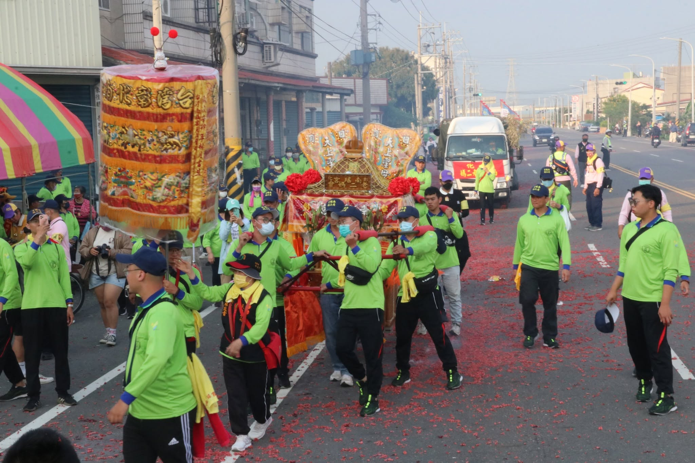
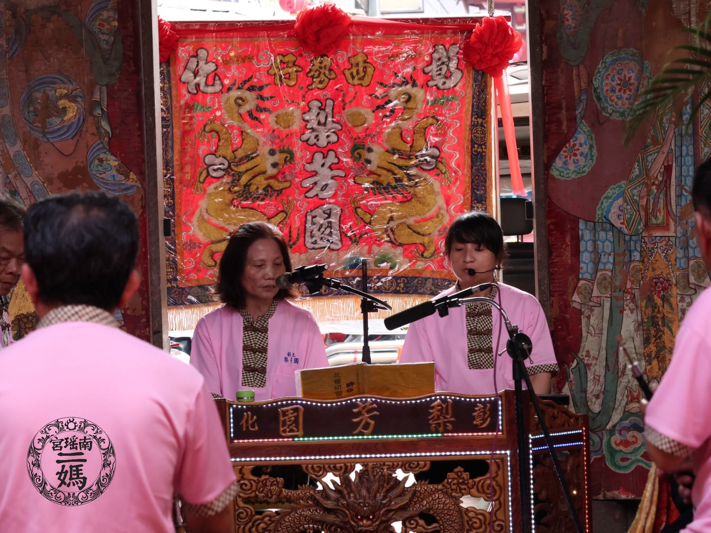

從清代清香繚繞的鄉里互助，到二十一世紀高效率的社團法人登記，老二媽會始終以信仰凝聚人心。
南瑤宮老二媽會的詳細起會年代雖已不可考，但文獻記載最遲在**清代道光十年（1830年）**便已正式成立。相傳此會是由臺中樹子腳林家（今臺中市南區工學里、樹義里一帶）的望族子孫林姓秀才發起，號召其旗下的佃農共同參與。這顯示了老二媽會早期不僅是宗教祭祀團體，更是與中部土地拓墾、地主佃農關係緊密相連的社會互助網絡。
樹子腳林家對於南瑤宮與老二媽會的發展具有卓越貢獻。1920 年代南瑤宮進行重修時，老二媽會總理林金柱與副總理林泉州統籌了大局；其後林昌、林榮洲等人接續負責廟宇改築及組織管理，奠定了今日的宏偉規模。
「二媽慈悲，顯靈庇佑。以敦睦宗誼，團結互助推動社會福利為宗旨，加強宗教文化活動以服務社會。」
老二媽會早期設有十二大角，戰後因地理變遷與組織重整，經媽祖請示後調整為目前的「十大角」。每個大角維繫五百人以上的規模，是地方信仰的基石。
載入十大角資料中...
「二媽年」的喧囂與北管絲竹的和鳴，共同譜寫了老二媽會最華麗的祭典樂章。

在彰化南瑤宮著名的笨港進香體系中，十尊會媽分為三組輪值辦理。老二媽會與「興二媽會」、「老伍媽會」被編為第二組，俗稱**「二媽年」**或**「二媽伍」**。
民間俗諺有**「二媽伍愛冤家」**的說法，反映了在進香過程中，由於二媽組的會員人數與角頭組織最為龐大，且信徒參與熱烈，在路線安排、祭祀順序以及陣頭互參時交流極為活絡，形成極具特色的「喧囂」與「熱鬧」民俗印記。
早期的進香並非每年固定，而是每四年向媽祖擲筊請示，獲得神諭方才成行。近代老二媽會亦積極參與南瑤宮因重修完成而舉行的「入火安座」及「十尊會媽角頭祈安繞境」等跨區域大型聯合活動，維繫跨地區信徒的凝聚力。
清領時期原回笨港天后宮。遭洪水毀壞後，現前往笨港地區遶境，並於北港朝天宮、新港奉天宮會香。

「曲館」與「獅陣」是傳統迎媽祖活動中不可或缺的「熱鬧」核心。南瑤宮老二媽會原有的專屬曲館為名聞遐邇的**「集樂軒」**，後因集樂軒在日治與戰後因故散伙，目前改由**「梨芳園」**（彰化重要的北管曲館）負責老二媽會的所有音樂與表演事務。
在老二媽會每年最隆重的農曆三月廿五日**「作會」（老二媽聖誕）**中，當幹部上香祭祀儀式完畢，梨芳園全體樂員會在老二媽座前的**「虎邊神房前」**進行隆重的北管排場演奏，用最傳統的鼓樂和嗩吶為神明賀壽。
在老二媽會的 YouTube 頻道上，也為梨芳園的遶境演藝與陣頭演出做了數位存檔，讓傳統非物質文化遺產得以跨越時空與世代，傳播給年輕一代。
老二媽會將 Facebook 與 YouTube 視為現代化營運的基礎設施，把宗教關懷延伸至網路空間，落實現代社會的責任。
【招募老二媽會會員】欣逢老二媽會現代化營運轉型，本會持續公開招募新會員！加入老二媽會並無特別限制，只需繳納入會費即可成為終身會員，入會贈送老二媽會三角刺繡旗及專屬帽子。歡迎透過粉專私訊留下您的聯絡方式，二媽慈悲護佑您！
【颱風防範提醒】強烈颱風即將來襲，請中彰投十大角各會員與信眾注意行車安全，避免前往危險山區或海邊。特別提醒信眾，關於停班停課資訊應以主管機關發布為主，切勿以訛傳訛謠傳不實資訊，請大家注意防颱準備！
經營 YouTube 官方頻道，目前上傳有包含「重修入火安座」、「恭迎聖爐」及「謁祖進香」等 69 部珍貴影片。特別提供如「甲辰年彰化南角恭迎聖爐直播未剪版」，讓 921 地震後散落各地或無法親臨現場的會員與信眾，能完整觀看傳統儀式，跨越空間藩籬。
透過數位敘事，向年輕一代推廣深厚的歷史。例如詳細記述草屯東角**「龍泉圳開水路神蹟」**：百年前地方開鑿龍泉圳歷時兩年多，竣工前工程受阻，眾人恭請老二媽蒞臨圳頭開水路，老二媽鑾轎一到，水路便順利開通。農田水利署土城工作站感念此神蹟，至今每年中元普度皆迎請老二媽與輔信將軍蒞臨「鑑普」，結合了農業生計與民間信仰。
在面臨天災（如鳳凰、丹娜絲颱風等）時，主動在網路空間發布心理慰藉訊息，傳遞「二媽慈悲護佑」的正能量；並扮演澄清社會謠言的責任窗口，保障社會資訊的正確傳播，實現超越宗教祭祀的公共價值。
加入「社團法人台灣南瑤宮老二媽會」並無地緣或血緣限制。不論您身在何處，只要繳納入會費即可成為會員，與兩百年的歷史洪流並肩同行。
請直接透過 Facebook 粉絲團私訊報名，本會將派專人與您聯絡。
入會即贈送精美老二媽會三角刺繡進香旗，隨神明出巡，象徵二媽的慈悲與守護。
贈送印有台灣南瑤宮老二媽會的精緻帽子，便於參與年度吃會與進香遶境。
享有參與過大爐與吃會社交活動。